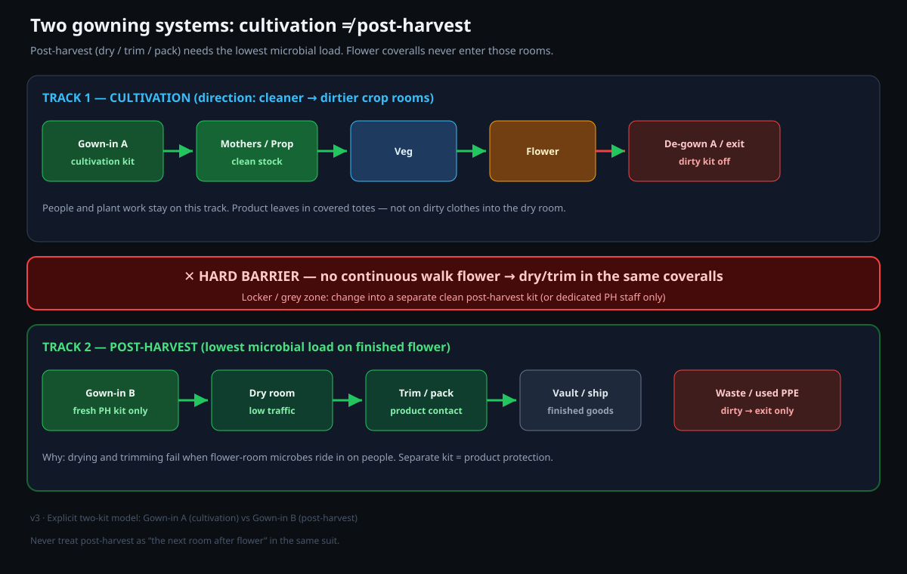
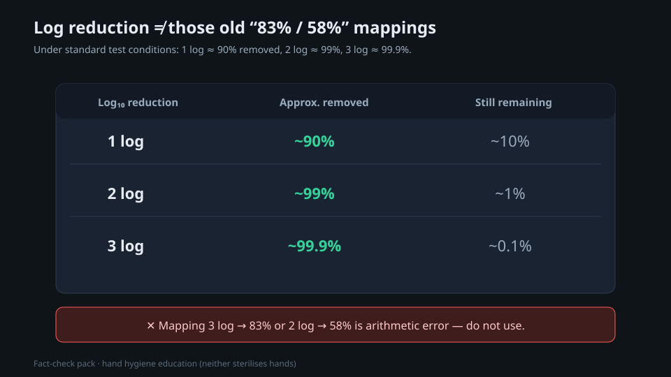

PPPE: plant and personal protective equipment
Coveralls, hairnets, gloves and shoe covers do two jobs at once: they keep the human safe, and they keep the human's particles, microbes and pests off the crop. People are the number-one contamination source in any clean space. This is the full rundown: how bad we are, the bare minimum, the room-by-room kit, and the procedures that actually work.
Two jobs, one suit
PPE in a grow is not really about you. In most rooms the gear is there to protect the plant from you: from the skin you shed, the spores on your jacket, the mites on your shoes and the viroid on your hands. The same coverall that keeps your clothes clean also keeps your contamination off the crop. That is why we call it PPPE, plant and personal protective equipment.
People are typically the dominant contamination source in any clean space (exact share varies by facility design)[1]. You cannot stop a human shedding. You can only put a barrier around the human and move them through the building in a controlled way. That is the whole game.
One contaminated mother plant or one shared glove can spread Hop Latent Viroid to an entire crop, and under experimental conditions infection of linked cuttings can approach complete cohort infection within weeks of propagation from infected stock[6]. The spread is mechanical, on tools, cuttings and hands, not airborne. Gloves-per-plant and gowning are not box-ticking; they are crop insurance.
In cultivation, dry and trim, PPE protects the product. In extraction it flips to protecting the worker (solvents, fire), and in the vault it is mostly security. Same word, different purpose, different kit. This paper is about the biosecurity side, with the legal duties that sit under all of it.
Evidence notes for this paper
These guides are evidence-linked field guides, not peer-reviewed journal articles. Use three reading modes: what is well established, what is solid commercial practice, and what is still thin, provisional, or easy to over-trust.
- People are major contamination vectors; mechanical HpLVd spread on tools/hands is real
- Hand hygiene log reductions are log-scale (≈90/99/99.9% class under test conditions)
- Clean→dirty personnel flow; waste dirty→exit
- Gowning order and two-kit models for cultivation vs post-harvest
- NZ HSWA PPE framing where applicable
- Exact '70–90% of cleanroom contamination is people' as a universal constant
- Phone-vs-toilet-seat rankings as rigorous biosecurity metrics
Community note: if your meters and plants disagree with a table, believe the plant and log the delta. Jurisdiction-specific rules (pesticides, residual solvents, security, PPE duties) always override any recipe here. Inline provisional callouts flag the most common over-trust points where they appear.
The words you need

How bad humans actually are
It is worth sitting with the numbers, because they are the entire argument for gowning up.
- Movement is the multiplier. A gowned person emits about 100,000 particles a minute standing still, a million walking, and up to five million working fast[1]. Slow, calm movement is itself a control.
- Your phone is a high-touch fomite. Phones carry skin and environmental flora and order of magnitude more bacteria than a public high-touch fomite that contacts faces and hands, and they ride to your face and back to your hands all day[4].
- Your shoes are a pest and spore taxi. Soles carry live pathogens and fungal spores, and walking re-launches settled organisms into the air[5]. Mites and powdery mildew arrive on clothing and footwear.
- The toilet throws a plume. A flush lofts aerosols to about 1.5 m within seconds, viable for minutes to hours; a closed lid cuts it sharply[8].
Washing helps but does not sterilise: alcohol rubs often achieve ~2–3 log reductions (~99–99.9%) under test conditions; plain soap and water remove soil and many organisms without sterilising hands[7]. That is why hand hygiene is a frequent loop at every transition, and why gloves and barriers carry the rest.
The bare minimum, everywhere
Before any room-specific extras, there is a non-negotiable baseline for entering any production or handling area. It mirrors food-GMP personnel rules[9] and WHO good agricultural and collection practice[10].
- Clean, dedicated outer garment put on at entry (gown, smock, scrubs or coverall), never your street clothes.
- Hair fully restrained, bouffant or hairnet, plus a beard cover for facial hair.
- Single-use nitrile gloves, intact, changed when damaged or contaminated.
- Controlled footwear, dedicated room shoes or covers, never the boots you wore in from the car park.
- Hand hygiene on entry and after any contamination or absence.
- No personal items, phone, jewellery, watch, makeup, left in a locker outside.
Remove jewellery, watches and makeup and store your phone before you put anything on. They cannot be cleaned, they shed particles, and a ring or watch hides bacteria a glove then traps against the crop.

Different rooms, different kit
PPE intensity tracks the value and vulnerability of what is in the room, not a single suit everywhere. Strictest where the genetics live and where product is open and headed to a patient.
| Zone | PPE level | Key points |
|---|---|---|
| Tissue-culture lab | Aseptic / ISO-5 | Scrub to elbow, sterile gloves, lab coat, work in a laminar-flow hood, no jewellery |
| Mother / propagation | Strictest biosecurity | Full gown, fresh gloves per plant, dedicated tools, serviced first in the day |
| Dry / cure | Cleanroom-grade | Product is exposed and microbial spec is a release gate |
| Veg / flower | Standard gown | Gown, hairnet, gloves, dedicated room footwear, sticky mat at the door |
| Trim / pack | Food-contact grade | Hairnet, beard net, gloves, smock, frequent glove changes |
| Vault / store | Minimal (security) | Gloves to keep product clean; controls are mostly security |
A contractor or visitor is the same contamination risk as staff, often worse (they were just somewhere else). Gown them to the room's standard or keep them out of mother, propagation, tissue culture and dry rooms entirely, and log every entry.
Gowning, in the right order
Order matters. You gown top-to-bottom so that particles shed while dressing fall onto areas you have not covered yet, and you cross a physical clean/dirty line as you go[13].
Coming out, remove the most contaminated items first and do not touch their outer surfaces: outer gloves, boot covers (stepping back over the line), coverall rolled inside-out, eyewear, hood, mask by its loops, hairnet, inner gloves, then wash. Single-use items go in the right bin in the anteroom.
Hands and gloves
Hands are the main transfer bridge, so hand hygiene is the most repeated action in the building. Do it on entry, before clean or aseptic work, after waste or any contamination, after any absence, and again on re-entry[11].
A glove is a barrier, not a clean hand. Wash before you don and immediately after you doff[12], and change gloves between plants in mother and propagation and any time they touch a non-clean surface. A dirty glove spreads viroid just as well as a dirty hand.
The scenarios that catch people out
Phones and personal items
No phones, earbuds, jewellery, watches or makeup in production or clean areas. A phone is a fomite you hold to your face and cannot clean[4]. Lockers outside the gowning room, everything in before you gown.
The toilet
Toilets must not open into production. A flush throws a viable bioaerosol over a metre in seconds[8], so anyone back from the restroom is a bridge until they have washed and re-gowned.
Eating and breaks
No eating, drinking, gum or vaping in production. De-gown to leave for a break area, then wash and re-gown on the way back.
Footwear and the floor
Cross-contamination: one-way flow
Who is responsible: HSWA 2015
In New Zealand, PPE and hygiene are not just good practice, they are legal duties under the Health and Safety at Work Act 2015[14], overseen by WorkSafe[15].
- Ensure worker health and safety so far as is reasonably practicable (s36).
- Apply higher controls before relying on PPE.
- Provide PPE and free replacements, and never charge workers for it (s27).
- Give information, training, supervision and adequate facilities.
- Take reasonable care for their own and others' safety (s45).
- Follow reasonable instructions, wear the required PPE, follow gowning and hygiene SOPs.
- Not misuse or interfere with anything provided for safety.
- Visitors carry the same take-care and follow-instruction duties.
The whole thing, in one place
Frame every glove and gown as plant protection first. A human cannot help shedding millions of particles an hour. The suit, the order, the flow and the wash are simply how we keep that off a crop that a single contaminated touch can ruin.
References
- Cleanroom contamination analyses: personnel are typically the dominant contamination source (industry figures often cite a large majority; exact share varies by facility); a gowned worker emits ~100,000 particles/min at rest, ~1,000,000 walking, up to ~5,000,000 in active work. (industry/manufacturer or non-journal source) https://www.precgroup.com/70-percent-of-cleanroom-contamination/
- Noble / CDC Emerging Infectious Diseases: humans disseminate ~10^7 skin squames per day, of which roughly 10% carry viable bacteria. https://wwwnc.cdc.gov/eid/article/7/2/70-0225_article
- Human microbial-emissions research: an occupied space gains roughly 37 million bacterial and 7 million fungal genome copies per person per hour above the unoccupied baseline. https://pmc.ncbi.nlm.nih.gov/articles/PMC7950481/
- Mobile phones as fomites: high-touch devices carry skin and environmental flora (methods and comparisons vary across studies), isolates including S. aureus, E. coli and Candida. https://pmc.ncbi.nlm.nih.gov/articles/PMC3939586/
- Shoe-sole and floor contamination: soles carry MRSA, C. difficile, E. coli and other organisms; walking re-disperses settled organisms, contributing a meaningful share of airborne CFU. (industry/manufacturer or non-journal source) https://www.infectioncontroltoday.com/view/shoe-sole-and-floor-contamination-new-consideration-environmental-hygiene
- Mechanical transmission and management of Hop Latent Viroid (HLVd) in cannabis: spread via contaminated tools and cuttings; under experimental conditions linked cuttings can approach complete infection within weeks; controls include fresh gloves per plant, tool sterilisation and footbaths. Plants (MDPI) 2025, 14:830. https://www.mdpi.com/2223-7747/14/5/830
- Comparative hand-hygiene efficacy: alcohol-based handrubs often achieve ~2–3 log reductions of transient flora under test conditions (~99–99.9%); soap and water remove soil and many organisms but neither sterilises hands. (Note: 1 log ≈ 90%, not ~58–83%.) https://www.ncbi.nlm.nih.gov/pmc/articles/PMC117885/
- Toilet-flush bioaerosol ('toilet plume'): a flush lofts aerosols to ~1.5 m within seconds; particles remain viable for minutes to hours, and a closed lid produces markedly less aerosol. https://pmc.ncbi.nlm.nih.gov/articles/PMC9732293/
- US FDA. 21 CFR 117.10, Personnel (current good manufacturing practice for food): clean outer garments, personal cleanliness, hand washing, hair restraints, glove integrity. (industry/manufacturer or non-journal source) https://www.ecfr.gov/current/title-21/chapter-I/subchapter-B/part-117/subpart-B
- World Health Organization (2003). WHO guidelines on good agricultural and collection practices (GACP) for medicinal plants. (industry/manufacturer or non-journal source) https://www.who.int/publications/i/item/9241546271
- World Health Organization. Hand hygiene: the Five Moments and recommended technique (soap-and-water 40-60s; alcohol-based handrub 20-30s, ≥60% alcohol). (industry/manufacturer or non-journal source) https://www.who.int/teams/integrated-health-services/infection-prevention-control/hand-hygiene
- US CDC. How to safely remove gloves: glove-to-glove then skin-to-skin, peeling inside-out so bare skin never contacts the contaminated exterior; hand hygiene before and after. (industry/manufacturer or non-journal source) https://www.cdc.gov/ebola/media/pdfs/2024/05/poster-how-to-remove-gloves.pdf
- GMP / cleanroom gowning and de-gowning procedures: top-to-bottom donning order across a clean/dirty demarcation bench, reverse dirtiest-first removal. (industry/manufacturer or non-journal source) https://www.pharmanow.live/pharma-manufacturing/cleanroom-gowning-procedures-guide
- Health and Safety at Work Act 2015 (NZ): s36 PCBU primary duty of care; s45 worker duties; s27 PCBU must provide what is required (including PPE) and must not charge workers for it. (industry/manufacturer or non-journal source) https://www.legislation.govt.nz/act/public/2015/0070/latest/DLM5976894.html
- WorkSafe New Zealand and the Health and Safety at Work (General Risk and Workplace Management) Regulations 2016, reg 6: control risk by the hierarchy of controls, with PPE as the last resort. (industry/manufacturer or non-journal source) https://www.worksafe.govt.nz/managing-health-and-safety/getting-started/introduction-hswa-special-guide/
Citations marked in-text as [n] map to this list. Primary literature and official guidance except where noted. Cannabis tissue culture is strongly genotype-dependent, verify dilutions, hormone doses and local regulations against the primary sources before relying on them.